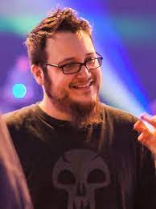

The Binding of Isaac was developed by Edmund McMillen and Florian Himsl
in 2011 during a game jam after the completion of Super Meat Boy,
McMillen's previous game. Since Super Meat Boy was successful, McMillen
was not concerned about making a popular game; he wanted to craft a game
which melded The Legend of Zelda's top-down dungeon approach with the
roguelike genre, wrapping it in religious allegory inspired by his upbringing.